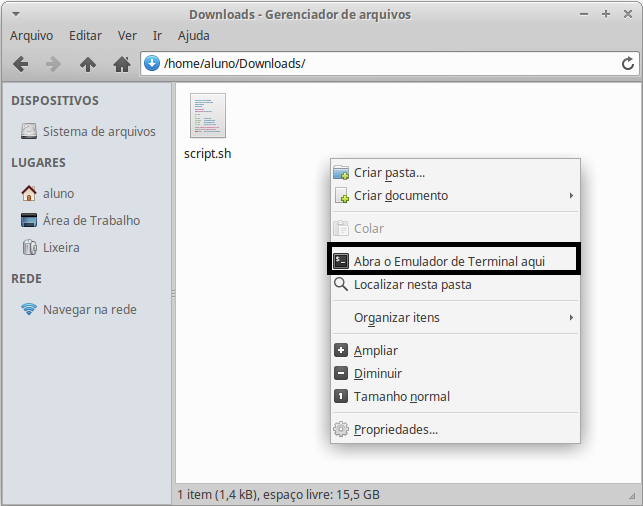
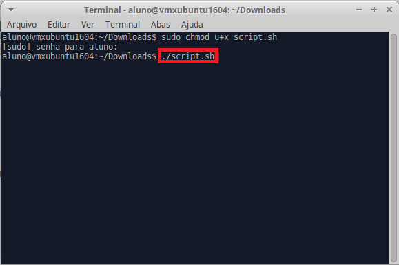

Depois do download siga as seguintes instruções:
Com o botão direito do mouse no pasta arquivo baixado, selecione Abra o Emulador de Terminal aqui
No Terminal digite o seguinte comando: sudo chmod u+x script.sh

Em seguida no terminal digite o comando ./script.sh
